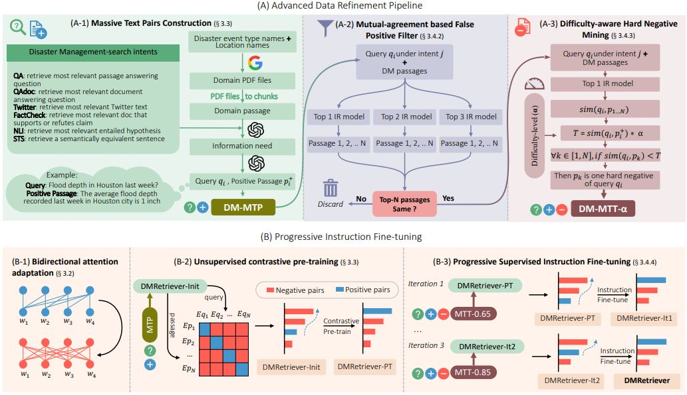
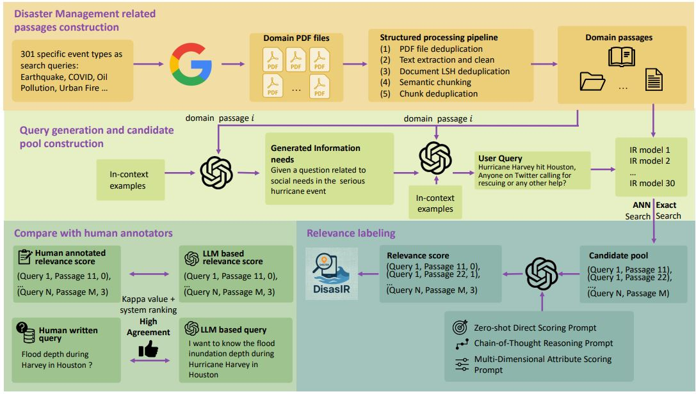
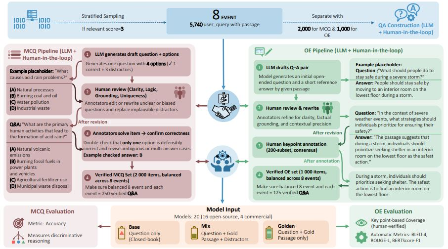

About Me
Howdy! I am a Ph.D. student in Computer Science at Texas A&M University (TAMU), advised by Prof. James Caverlee and Prof. Ali Mostafavi. My research lies at the intersection of Information Retrieval and large language models, with a focus on building robust retrieval systems for data-scarce domains and developing LLM-powered multi-agent frameworks for complex task solving.
My recent work includes DMRetriever, a family of dense retrieval models achieving state-of-the-art performance across 48 retrieval tasks (ACL 2026 Main), and DisastIR, the first comprehensive IR benchmark for disaster management (EMNLP 2025 Findings).
I am open to research collaboration and internship opportunities. Feel free to reach me at kai_yin@tamu.edu.
🔥 News
- 2026.04 🎉🎉 DMRetriever is accepted by ACL 2026 Main! [Paper] [Code] [Model]
- 2026.04 🎉🎉 DisastQA is accepted by ACL 2026 Findings! [Paper]
- 2025.11 🚀 Released source code and model checkpoints for DMRetriever (33M–7.6B). [GitHub] [HuggingFace]
- 2025.08 🎉🎉 DisastIR is accepted by EMNLP 2025 Findings! [Paper]
- 2025.08 🚀 Released source code and dataset for DisastIR. [GitHub] [HuggingFace]
📝 Selected Publications

DMRetriever: A Family of Models for Improved Text Retrieval in Disaster Management
ACL 2026 Main
- A family of six dense retrieval models (33M–7.6B) achieving SOTA across 48 retrieval tasks at all scales.
- Proposes difficulty-aware progressive fine-tuning and multi-teacher knowledge distillation for parameter-efficient retrieval.
- Introduces a light-weight IR validation set enabling 30× faster model development.

DisastIR: A Comprehensive Information Retrieval Benchmark for Disaster Management
EMNLP 2025 Findings
- 48 retrieval tasks with over 1.3M automatically labeled query-passage pairs for disaster management.
- Four-stage automatic relevance labeling framework achieving zero "hole" rate and high ranking consistency with human annotations.
- Benchmarks 30 retrieval models (33M–7B) under exact and ANN search.

DisasterQA: A Comprehensive Benchmark for Question Answering Evaluation in Disaster Management
ACL 2026 Findings | Co-first author
- 3,000 QA pairs covering multiple-choice and open-ended questions based on DisastIR.
- Human-LLM collaborative pipeline with key point extraction for verifiable open-ended evaluation.
- Evaluates 18 LLMs under no-passage, golden-passage, and mixture retrieval settings.
-
CrisisSense-LLM: Instruction Fine-Tuned Large Language Model for Multi-label Social Media Text Classification in Disaster Informatics.
Kai Yin, Chengkai Liu, Ali Mostafavi, & Xia Hu. (2024). arXiv:2406.15477. (Under review, Information Processing and Management)
[arXiv] [Code] -
FloodSQL-Bench: A Retrieval-Augmented Benchmark for Geospatially-Grounded Text-to-SQL.
Hanzhou Liu, Kai Yin, Ali Mostafavi, & James Caverlee (2025). arXiv:2512.12084. [arXiv] -
Deep Learning-driven Community Resilience Rating based on Intertwined Socio-Technical Systems Features.
Kai Yin, Bo Li, Ali Mostafavi (2023). arXiv:2311.01661. (npj Urban Sustainability) [arXiv] -
Unsupervised graph deep learning reveals emergent flood risk profile of urban areas.
Kai Yin, Ali Mostafavi (2023). arXiv:2309. (Under review, npj Urban Sustainability) -
An integrated resilience assessment model of urban transportation network: A case study of 40 cities in China.
Kai Yin, Wu, J., Wang, W., Lee, D. H., & Wei, Y. Transportation Research Part A.
🔬 Research Projects
CrisisSense-LLM: Instruction Fine-Tuning LLM for Multi-task Social Media Text Processing in Disaster Informatics
Jan. 2024 – Jun. 2024
- Instruction fine-tuned Llama3.1-8B for multi-task tuning (text classification + NER) in multi-turn conversation format via LoRA and full-parameter settings.
- Achieved 96.7% of full-parameter tuning performance with optimal LoRA hyperparameters and 87.2% overall accuracy.
- Fine-tuned with DeepSpeed ZeRO-Stage-3 in data-parallel mixed-precision, reducing GPU time by 35%.
Disaster-Agent: LLM-based Multi-agent System for Complex Disaster Management Task Solving
Sep. 2024 – Jan. 2025
- Proposed E_MCTS_TP (Efficient Monte Carlo Tree Search for Task Planning) to improve task planning ability of small language models in multi-agent systems at test time.
- Developed DisasterTool via LLM-in-loop domain-specific agent discovery pipeline, reducing human workloads by 98.9%.
- Introduced DisasterTask benchmark with tasks of varying complexity (node, chain, DAG levels).
📖 Education
-
2022.08 – 2027.05 (exp.)
Texas A&M University, College Station, TX, USA
Ph.D. student in Computer Science -
2019.09 – 2021.06
Beijing Jiaotong University, Beijing, China
M.S. in Traffic and Transportation Engineering -
2015.09 – 2019.06
Henan Polytechnic University, Jiaozuo, China
B.S. in Traffic Engineering
🛠 Skills
🏆 Honors & Awards
- Passed CSE Ph.D. Qualifying Exam with 99th percentile score.
- National Second Prize, 13th National Undergraduate Transportation Science and Technology Competition (First Author).